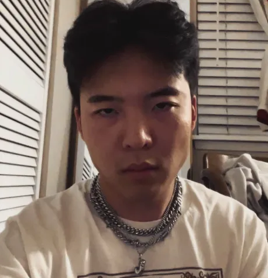
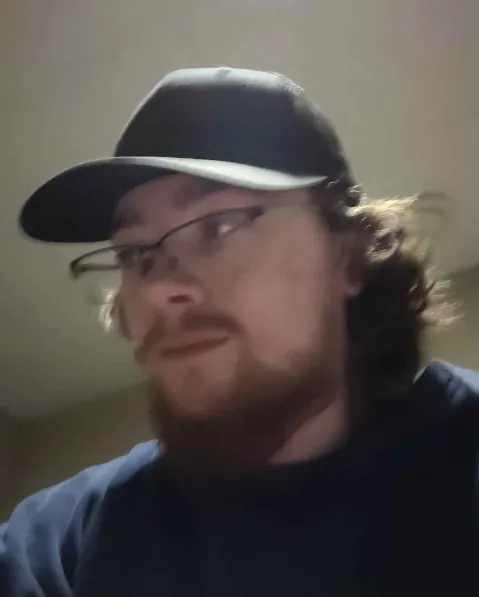
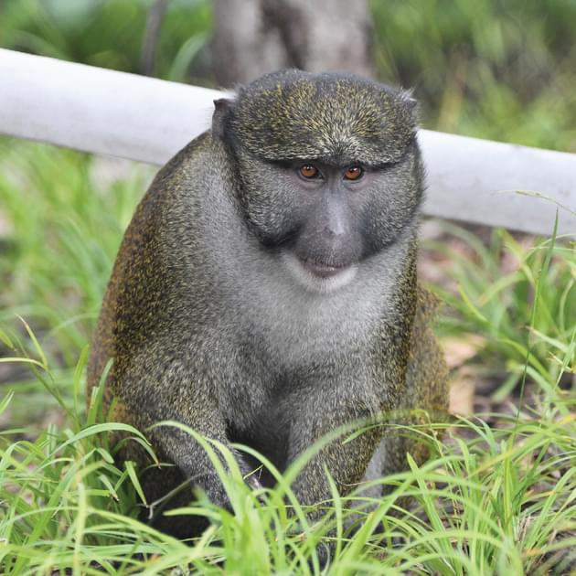
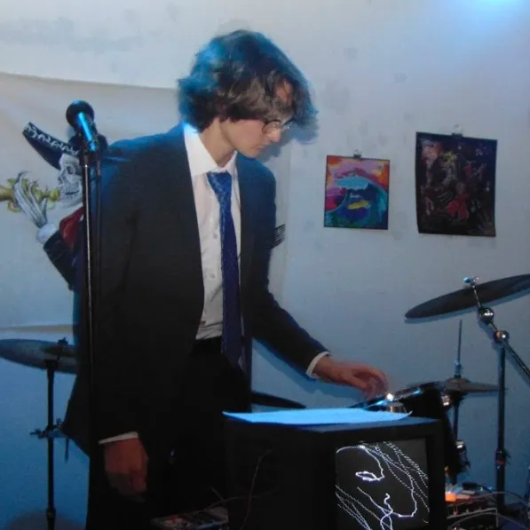

the game
Scram has originally began development in 2016 and was published on Steam in 2018. Scram is a satirical multiplayer first person shooter with paper arts and crafts type inspired aesthetics.
Scram is designed to be a silly fun game with interesting game mechanics.
Multiple different concepts of the game was experimented with. "Dread Signal" was the very first version of Scram which was basically a 2D story mode of the game. Then, the game was later re-developed into a fully 3D multiplayer first person implementation and the Scram prototype version with a cartoon inspired art style was experimented with.
Finally, the original Scram was concluded and distributed on Steam in 2018.
Scram 2 was designed to become the ultimate sequel to the Scram series. It was engineered to have interesting weapons that Scram has never seen before. It would be included with intense parkour mechanics unlike the basic movement of the
original game, as well as more mutant classes, and maps to offer more gameplay variations. The game mode was intended to be much more diverse and replayable by implementing random rescue locations, ammo boxes, and well-placed vending machines to diversify gameplay rounds unlike the original
Scram which only offered a single static way of playing.
the studio
Spleen is a small studio of indie devs that was founded in 2016. Spleen is responsible for the creation and development of the Scram series. It has an avid passionate team of developers who are eager to work on a sequel and resume development of Scram 2.
the team

Jay is the founder of Spleen and lead developer of the Scram series. He has developed the game starting from 2016 until present day.
He has a strong passion for game design, coding, singing, and creating soundtracks with his guitar and sometimes rapping over them.
Jay is responsible for designing all of the gameplay, art concepts, as well as coding almost the entirety of the whole game.

Derek is the specialized backend developer of Scram. He has prolonged experience engineering innovative and sophisticated server infastructure for the game.
Derek has worked on several different architectures such as Steam workshop modding support, custom map editors, server back-end technology, dedicated servers, and database systems.

Will is the 3D modeler of Scram 2. He has created amazing low-poly style weapons, maps, and cosmetics for the project. He is a massive contributor to the sequel and is responsible for most of the artwork.

Lane is the creator of this website. He has a strong passion for gaming and composing music. He is an avid Scram supporter since the first release of the game on Steam and he is now collaborating with the dev team to create cool projects such as this website.